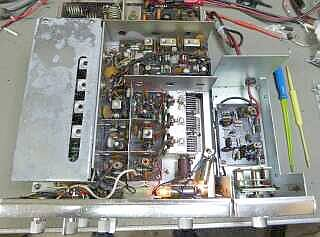
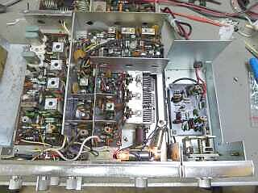
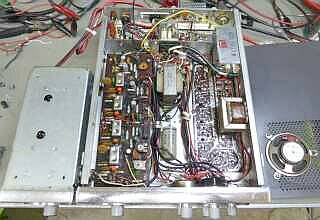
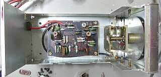
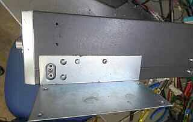
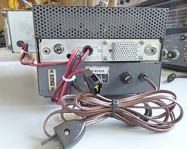

 |
上蓋を取り外して撮したものです
シールド・ケースに囲われているのは、送信クリスタル発信回路からファイナルドライバの手前まで
ここのトラッキング調整が今回の一番の調整仕事でした
５０～５２ＭＨｚの範囲を、５Ｗ程度以上の出力になるように調整・・・です
割れたコアの交換、調整中に壊れたセラミックトリマの交換、物理的な修理はこの2点だけでした |
 |
シールド・ケースを外して撮してみました
標準装備のクリスタルが３つ見えます
クリスタル本体ケースのＴＯＰ部の錆が凄い
が、動作に問題はありません
中央は、受信ＲＦ／ＶＦＯ部です
その後ろの基板は、ＡＭ-ＩＦ／ＡＦ部です
半分くらい写っている一番奥の基板が、送信ドライバ／ファイナル部です
オプションのＶＦＯも、ケースを外して撮しています |
 |
こちらは底蓋を外した状態で撮したものです
本体左側の基板は、ＦＭ-ＩＦ部
中央のトランスは、ＡＦ出力／変調トランスです
右に見えているトランスは、電源チョーク・トランスです
その奥に見える箱状のものは、ＬＰＦ部です
ＬＰＦ内蔵・・・ＴＶＩは酷かったです（ＶＨＦ ＣＨ３／９がある地域）
ご覧のように、内蔵スピーカーは、底蓋に取り付いています |
 |
外部ＶＦＯ、ＶＦＯ-１０の中身です
ご覧のようにダイヤル照明はありません
手前右下が、本体に接続するＨＣ－６／Ｕピン側です
今回接続してあったものを取り外したら（離したら）このピン部分が壊れてしまいました
瞬間接着剤で修復しました
後は、ダイヤル表示と実Ｆが合うように調整です |
 |
ＶＦＯの接続は、この右サイドに用意されたＨＣ－６／Ｕソケットを経由します
クリスタルの挿入、もしくはＶＦＯの接続です
ＶＦＯの電源は別途供給・・・です
ＶＦＯの取付は、このＬ字型の金具を使って行います |
 |
全体を背面から
今回は、ＰＳ-５０００を使っていません、単なる台状態です
動作はちゃんとしているのですが、線材が細いほか降圧要素が多かったため、別途電源を使うことにしました（仕様は、１３．８Ｖ １．８Ａ 実際は無変調にこれくらい流れますので、ＡＭでは容量不足気味でしょう）
使わないとは言え、平滑コンデンサ１０００μFは少々寂しい？ので、手元にあった３３００μFを追加しました
別電源の利用で、電源装置毎の電源ＯＮ／ＯＦＦは出来なくなります
ＶＦＯにも単独でＤＣ１２Ｖを供給します
内蔵スピーカーは、本体下に内蔵です
ＰＳ-５０００の場合、そのスピーカーから出る音を、フタをせずに前から出す単純なスタンドの役目をしています |